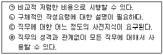
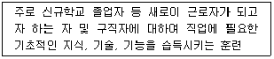
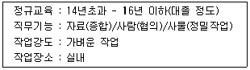

직업상담사-2급(구) (2005-03-20 기출문제)
1과목: 직업상담ㆍ심리학
1. 행동주의적 상담기법 중 학습촉진기법이 아닌 것은?
- 강화
- 변별학습
- 대리학습
- 체계적 둔감화
(정답률: 알수없음)

2. 직업카드분류법은 직업상담에서 많이 사용하는 기법 중 하나이다. 직업카드분류법은 무엇을 알아보기 위한 것인가?
- 직업선택시 사용가능한 기술
- 가족내 서열 및 직업가계도
- 직업세계와 고용시장의 변화
- 직업선택의 동기와 가치
(정답률: 알수없음)
3. 직업지도 프로그램을 적용하기에 옳지 않은 것은?
- 청소년 진로지도
- 은퇴 시 직업능력 개발
- 여성의 진로선택
- 효과적 보험설계 작업
(정답률: 알수없음)
4. 상담자가 자신의 바람은 물론 내담자의 느낌, 인상, 기대 등에 대하여 이해하고 이를 상담대화의 주제로 삼는 상담기법은?
- 직면
- 계약
- 즉시성
- 리허설(rehearsal)
(정답률: 알수없음)
5. 다운사이징 시대의 경력개발 형태가 아닌 것은?
- 다양한 능력의 개발
- 내부 배치
- 재교육
- 승진 촉진 개발
(정답률: 알수없음)
6. 처음 직업 상담을 받는 내담자에게서 탐색하여야 할 점은?
- 자기인식수준
- 유머 감각수준
- 내담자의 경제적 상황
- 상담자와 문화적 차이
(정답률: 알수없음)
7. 아들러(Adler)가 말한 세계와 개인의 관계에 관한 세가지 과제에 속하지 않는 것은?
- 성(性)
- 여가
- 일
- 사회
(정답률: 알수없음)
8. 자기 주장 훈련이나 체계적 둔감화는 다음 중 어떤 상담이론과 관련이 있는가?
- 행동주의 상담
- 인본주의 상담
- 형태주의 상담
- 개인주의 상담
(정답률: 알수없음)
9. 다음 중 직업상담자 윤리로 알맞은 것은?
- 직업상담자는 내담자 개인 및 사회에 임박한 위험이 있다고 판단되더라도 개인정보와 상담내용에 대한 비밀을 유지해야 한다.
- 직업상담자는 자신이 실제로 갖추고 있는 자격 및 경험의 수준을 벗어나는 인상을 주어서는 안된다.
- 직업상담은 심층적인 심리상담이 아니므로 비밀 유지의무가 없다.
- 직업상담자는 내담자가 상담을 통해 도움을 받지 못하더라도 먼저 종결하려고 해서는 안된다.
(정답률: 알수없음)
10. 다음 중 직업상담 과정에서 내담자 목표나 문제의 확인 명료 ㆍ 상세 단계의 내용으로 적절하지 않은 것은?
- 내담자와 상담자 간의 상호간 관계 수립
- 내담자의 현재상태와 환경적 정보 수집
- 진단에 근거한 개입의 선정
- 내담자 자신의 정보수집
(정답률: 알수없음)
11. 직업 적성을 평가하는 일반 적성검사문항(GATB)에 포함되지 않는 것은?
- 손가락 민첩성
- 언어능력
- 사무능력
- 공감력
(정답률: 알수없음)
12. 집단직업상담과 관련된 설명으로 옳지 않은 것은?
- Butcher는 집단직업상담의 3단계로 탐색단계, 전환단계, 행동단계를 제시하였다.
- 집단직업상담은 직업성숙도가 높은 사람들에게 더 효과적이다.
- 집단직업상담에서 각 구성원들은 상담과정에서 이루어진 토의 내용에 대해 비밀을 유지해야 한다.
- 남성과 여성은 집단직업상담에 임할 때 목표가 서로 다를 수 있으므로 성별을 고려해야 한다.
(정답률: 알수없음)
13. 흥미, 지능, 적성, 성격 등 표준화 검사의 실시와 결과의 해석을 강조하는 직업상담은?
- 정신역동적 직업상담
- 인간중심적 직업상담
- 특성요인 직업상담
- 발달적 직업상담
(정답률: 알수없음)
14. 직업선택을 발달단계에 따라 변화하는 3단계로 나누어 환상기, 선택의 변화기, 현실적 선택시기로 설명하고 있는 학자는?
- 크라이쯔
- 긴즈버그
- 앤로
- 마즐로우
(정답률: 알수없음)
15. 직업상담에 사용되는 질적 측정도구가 아닌 것은?
- 역할놀이
- 제노그램
- 카드분류
- 미네소타욕구중요도검사
(정답률: 알수없음)
16. 진로수첩이 내담자에게 미치는 유용성으로 볼 수 없는 것은?
- 자기 평가를 통해 자신감과 자기 인식을 증진시킨다.
- 일 관련 태도 및 흥미에 대한 지식을 증진시킨다.
- 다양한 경험들이 어떻게 직무관련 태도나 기술로 전환될 수 있는지에 대해 이해를 발전시킨다.
- 진로, 교육, 훈련 계획을 개발하기 위한 상담도구를 제공한다.
(정답률: 알수없음)
17. 직업상담 프로그램에서 가장 중요하고 기본적인 프로그램은?
- 직업세계 이해 프로그램
- 직업 복귀 프로그램
- 자신에 대한 탐구 프로그램
- 취업활동 효율성 증진 프로그램
(정답률: 알수없음)
18. 직업을 전환하고자 하는 내담자에게서 반드시 우선적으로 탐색해야할 사항은?
- 변화에 대한 인지능력
- 새로운 직업에서 성공기대 수준
- 직업상담에 대한 기대
- 기존에 가지고 있던 직업에 대한 애착 수준
(정답률: 알수없음)
19. 다음 중 연결이 옳지 않은 것은?
- 교류분석적 상담 - 성격 자아상태 분석
- 내담자 중심상담 - 비지시적 상담
- 아들러(Adler)의 개인주의 상담 - 심리성적 결정론
- 형태주의 상담 - Perls에 의해 발전
(정답률: 알수없음)
20. 인간 중심(내담자 중심) 직업상담을 할 때 직업상담사가 갖추어야 할 세가지 기본태도가 아닌 것은?
- 일치성/진실성
- 해석능력
- 공감적 이해
- 수용
(정답률: 알수없음)
21. Super의 직업발달이론에 대한 중심개념으로 볼 수 없는 것은?
- 개인은 각기 적합한 직업군의 적격성이 있다.
- 직업발달과정은 본질적으로 자아개념의 발달 보완과정이다.
- 개인의 직업기호와 생애는 자아실현의 과정으로 현실과 타협하지 않는 활동과정이다.
- 직업과 인생의 만족은 자기의 능력, 흥미, 성격특성 및 가치가 충분히 실현되는 정도이다.
(정답률: 알수없음)
22. 팀 생산성을 높이기 위해서 부하들을 철저히 감독하라는 사장의 요구와 작업능률을 높이려면 자신들이 자발적으로 일할 수 있는 분위기를 만들어 주어야 한다는 부하들의 요구 사이에서 고민하는 팀장의 스트레스 원인은?
- 송신자내 갈등(intrasender conflict)
- 개인간 역할갈등(inter-role conflict)
- 개인내 역할갈등(person-role conflict)
- 송신자간 갈등(intersender conflict)
(정답률: 알수없음)
23. 직업발달이론 중 직업적 성숙 과정을 강조하는 이론은?
- 발달적 이론
- 정신분석 이론
- 욕구 이론
- 사회학습 이론
(정답률: 알수없음)
24. 검사실시에 영향을 미치는 외적 변수들을 가능한 제거하는 것이 목표인 것은?
- 타당화
- 표준화
- 신뢰화
- 규준화
(정답률: 알수없음)
25. 최근 직무 수행을 예언하는데 유용하다는 성격 5요인(Big 5) 모델에서 제시하지 않는 요인은?
- 외향성
- 정서적 안정성
- 성실성
- 지배성
(정답률: 알수없음)
26. A씨는 적성검사에서 높은 적성을 보인 영역에 취업을 하였는데, 나중에 그 영역에서 낮은 생산성을 보여 퇴직을 당하였다. 그렇다면 그 적성검사는 다음 중 어떤 영역에서 문제를 가지고 있는 것인가?
- 구인타당도
- 내용타당도
- 예언타당도
- 수렴타당도
(정답률: 알수없음)
27. 다음 중 검사의 실시방법에 따라 심리검사를 분류한 경우는?
- 적성검사
- 지능검사
- 성취도검사
- 지필검사
(정답률: 알수없음)
28. 개념준거와 실제준거들간의 관계에 있어서 실제준거가 개념준거와 관련되어 있지 않는 부분을 무엇이라고 하는가?
- 준거결핍(criterion deficiency)
- 준거적절성(criterion relevance)
- 준거오염(criterion contamination)
- 준거편파(criterion bias)
(정답률: 알수없음)
29. Levinson은 생애 발달주기를 변화와 안정의 계속적인 과정을 거치는 열 단계의 발달모형으로 제시하였다. 이들 단계 중에서 초기성인단계가 완성되고 안정되는 시기로서 33세에서 40세까지의 연령에 해당하는 단계는?
- 초기 성인세계단계
- 30세 변화단계
- 정착단계
- 중기 성인단계
(정답률: 알수없음)
30. 홀랜드(Holland)의 모형에서 창의성을 지향하는 아이디어와 자료를 사용해서 자신을 새로운 방식으로 표현하는 유형은?
- 현실형
- 탐구형
- 예술형
- 사회형
(정답률: 알수없음)
31. 다음 중 <보기>의 특성을 가진 직무분석기법은?

- 면접법(Interview)
- 관찰법(Observation)
- 질문지법(Questionnaire)
- 중요사건법(Critical Incidents)
(정답률: 알수없음)
32. Locke와 Latham이 주장한 목표설정이론(goal-setting theory)에 관한 설명으로 틀린 것은?
- 어려운 목표가 더 높은 수준의 직무수행을 가져온다.
- 목표에 대한 몰입이 목표의 난이도에 비례한다.
- 목표가 일반적일수록 개인은 그것을 추구하기 위해 더 노력한다.
- 개인이 과업수행에 대하여 피드백을 받는 것이 중요하다.
(정답률: 알수없음)
33. 긴즈버그(Ginzberg)의 직업발달이론의 핵심을 바르게 설명 한 것은?
- 직업에 대한 지식, 태도, 기능은 어려서부터 일련의 단계를 거쳐 발달한다.
- 직업선택과 적응은 성장기, 탐색기, 확립기, 유지기, 쇠퇴기로 나누어진다.
- 직업발달과정은 주로 자아개념을 발달시키고 실천해 나가는 과정이다.
- 사람들은 자신의 자아 이미지에 알맞는 직업을 원하기 때문에 직업발달에서 자아개념은 진로선택의 중요한 요인이다.
(정답률: 알수없음)
34. 경력개발 프로그램을 설계할 때, 누구를 대상으로, 어떤 경력평가 프로그램을 만들 것인지를 알아보는 것이 중요하다. 이를 무엇이라 부르는가?
- 슈퍼(Super)평가
- 니즈평가
- 직무평가
- 조직평가
(정답률: 알수없음)
35. 검사 결과로 제시되는 백분위 95에 대한 바른 설명은?
- 검사 점수를 95% 신뢰할 수 있다는 뜻
- 전체 문제 중에서 95%를 맞추었다는 뜻
- 내담자의 점수보다 높은 사람들이 전체의 95%가 된다는 뜻
- 내담자의 점수보다 낮은 사람들이 전체의 95%가 된다는 뜻
(정답률: 알수없음)
36. 미국의 AT & T사에서 처음 운영한 이래 직원들의 관리능력을 평가하기 위한 방법으로 사용된 것으로, 수일간에 걸쳐 면접, 리더없는 집단토의, 비즈니스 게임 등 다양한 형태의 실습을 한 뒤 복수의 전문가들이 리더십, 의사소통능력 등을 평가하는 방식은?
- 후견인 프로그램
- 평가기관(Assessment Center)
- 경력 워크샆
- 조기발탁제도
(정답률: 알수없음)
37. 직무분석을 통해, 해당 직무를 수행하는 작업자가 갖추어야 할 자격요건을 기록한 것은?
- 직무 기술서(job description)
- 직무 명세서(job specification)
- 기능적 직무 분석(functional job analysis)
- 직책 기술서(position description)
(정답률: 알수없음)
38. 다음에 제시된 직무분석 방법 중 참고자료가 충분하고 단기간에 관찰이 불가능한 직무에 적합한 방법은?
- 최초분석법
- 데이컴법
- 그룹토의법
- 비교확인법
(정답률: 알수없음)
39. 다음 중 직무만족(job satisfaction)과 작업동기(workmotivation)에 대한 설명으로 올바른 것은?
- 직무만족은 직무상에 발생되는 행동에 관한 것이다.
- 직무만족은 목표에 방향 지워진 행동을 일으키게 하는 역동적인 과정이다.
- 작업동기는 직무상에 발생되는 행동에 대한 것이다.
- 작업동기는 직무에 대해 가지고 있는 감정에 대한 것이다.
(정답률: 알수없음)
40. 직무분석(job analysis) 방법으로 볼 수 없는 것은?
- 관찰법
- 면접법
- 평가법
- 구조화된 설문지법
(정답률: 알수없음)
2과목: 직업정보론(노동시장론 포함)
41. 분석하려는 직업에 종사하는 경험이 많은 전문가들을 한 자리에 모아 놓고 짧은 시간에 브레인스토밍기법으로 직무를 분석하는 방법은?
- 데이컴법
- 비교확인법
- 면접법
- 최초분석법
(정답률: 알수없음)
42. 일반적으로 정부에서 지원하고 있는 직업훈련의 절차로 올바른 것은?
- 구직등록 - 훈련직종의 선택 - 직업선호도 검사 - 훈련기관의 선택 및 훈련신청 - 훈련대상자의 선발
- 구직등록 - 훈련기관의 선택 및 훈련신청 - 직업선호도 검사 - 훈련직종의 선택 - 훈련대상자의 선발
- 구직등록 - 훈련대상자의 선발 - 직업선호도 검사 - 훈련직종의 선택 - 훈련기관의 선택 및 훈련신청
- 구직등록 - 직업선호도 검사 - 훈련직종의 선택 - 훈련기관의 선택 및 훈련신청 - 훈련대상자의 선발
(정답률: 알수없음)
43. 15세이상 인구가 36,784천명, 취업자가 22,223천명, 실업자가 661천명이라고 할때 실업률은?
- 1.7%
- 2.9%
- 3.0%
- 3.5%
(정답률: 알수없음)
44. 향후 5년 동안의 직업 전망 중 옳지 않은 것은?
- 1차 산업과 제조업에서는 전반적으로 고용의 감소가 예상된다.
- 서비스업 관련 직종에서도 대부분 고용이 감소할 것으로 예상된다.
- 운수업분야에 종사하는 사람들의 일자리는 전반적인 증가가 예상된다.
- 경제의 정보화, 소프트화, 서비스화가 진행되면서 여성노동력에 대한 수요가 증가할 것이다.
(정답률: 알수없음)
45. 직업선택 결정모형 중 기술적 직업결정모형으로 분류되지 않는 것은?
- 힐튼(Hilton)의 모형
- 브룸(Vroom)의 모형
- 슈(Hsu)의 모형
- 카츠(Katz)의 모형
(정답률: 알수없음)
46. 『응시하고자 하는 종목에 관한 기술기초이론 지식 또는 숙련기능을 바탕으로 복합적인 기능업무를 수행할 수 있는 능력의 유무』를 검정기준으로 하는 국가기술자격 등급은?
- 기능장
- 기사
- 산업기사
- 기능사
(정답률: 알수없음)
47. 한국표준직업분류에서 정의하여 사용하는 직무능력수준 가운데 제2직능 수준이 요구되는 직업대분류로 바르게 짝지어진 것은?
- 사무종사자, 기술공 및 준전문가
- 전문가, 판매종사자
- 서비스 종사자, 기술공 및 준전문가
- 농업, 임업 및 어업숙련 종사자, 사무종사자
(정답률: 알수없음)
48. 지식기반 사회가 도래하면서 많은 유망직업이 창출되고 있다. 다음 중 향후 증가할 것으로 예상되지 않는 직종은?
- 국제회계사
- 시나리오 작가
- 전화교환원
- 외환딜러
(정답률: 알수없음)
49. 공공취업알선 및 고용보험사업 등의 실적을 정기적으로 심층 분석하여 고용정책수립, 진행 및 관련 연구활동의 기초자료로 활용되고 있는 것은?
- 고용보험통계연보
- HRD 분석
- 고용동향분석
- 구인구직 및 취업동향
(정답률: 알수없음)
50. 국가기술응시자격 체계에서 기사자격 응시가 불가능한 경우는?
- 4년제 대학졸업(예정)자
- 기능사 + 2년실무(동일 직무분야)
- 산업기사 + 1년실무(동일 직무분야)
- 전문대졸 + 2년실무(동일 직무분야)
(정답률: 알수없음)
51. 다음 중 고용안정센터에서 수행하는 업무는?
- 고용보험 피보험자격 취득신고
- 보험관계 성립신고
- 보험료감액 조정신청
- 실업급여반환금 징수업무
(정답률: 알수없음)
52. 한국표준직업분류에서 직업을 분류하는 기준은?
- 직무와 직종
- 직무와 직능
- 직무와 자격
- 직능과 직종
(정답률: 알수없음)
53. 직무분석에서 작업(task)을 구분하여 열거할 때 작업여부 기준이 아닌 것은?
- 작업 속에는 가르칠만한 내용이 있다.
- 작업들이 이어지면 하나의 직업이 된다.
- 작업은 시작과 끝이 분명하다.
- 작업을 마치고 났을 때 평가할만한 내용이 있다.
(정답률: 알수없음)
54. 다음 중 공공직업정보의 특성에 해당되는 것은?
- 필요한 시기에 최대한 활용되도록 한시적으로 신속하게 생산되어 운영된다.
- 특정 분야 및 대상에 국한되지 않고 전체산업 및 업종에 걸친 직종을 대상으로 한다.
- 정보 생산자의 임의적 기준에 따라 관심이나 흥미를 유도할 수 있도록 해당 직업을 분류한다.
- 특정 직업에 대해 구체적이고 상세한 정보를 제공하기 위해서는 조사 분석 및 제공에 상당한 시간 및 비용이 소요되므로 해당 직업정보는 유료로 제공한다.
(정답률: 알수없음)
55. 직업능력개발훈련내용 대상에 따른 구분 중 다음은 어떤 훈련을 의미하는가?

- 양성훈련
- 향상훈련
- 전직훈련
- 집체훈련
(정답률: 알수없음)
56. 다음 중 한국표준직업분류상 직업에 속하는 활동은?
- 이자, 주식배당, 임대료, 소작료, 권리금 등과 같은 재산 수입을 얻는 활동
- 군인과 같이 국가의 부름을 받고 하는 활동
- 자기 집에서 하는 가사 활동
- 정규 주간 교육 기관에 재학하고 있는 경우
(정답률: 알수없음)
57. 실직자에 대한 생계지원은 물론 재취업을 촉진하고 더 나아가 실업의 예방, 노동시장의 구조개편, 직업훈련 등의 강화를 위한 사전적 적극적 차원의 사회보장제도는?
- 실업지원제도
- 고용보험제도
- 취업알선제도
- 직업상담제도
(정답률: 알수없음)
58. 다음은 한국직업사전에 수록된 플라스틱제품기술자의 부가직업정보이다. 이에 대한 설명으로 틀린 것은?

- 정규교육은 해당 직업종사자의 평균 학력을 의미한다.
- 종합은 사실을 발견하고 지식개념 또는 해석을 개발하기 위해 자료를 종합적으로 분석하는 것을 의미한다.
- 가벼운 작업은 최고 8kg의 물건을 들어올리고 4kg 정도의 물건을 빈번히 들어올리거나 운반한다.
- 실내는 눈, 비, 바람, 온도변화로부터 보호를 받으며 작업의 75% 이상이 실내에서 이루어지는 경우이다.
(정답률: 알수없음)
59. 다음 중 비경제활동인구로 분류할 수 있는 것은?
- 수입목적으로 1시간 일한 자
- 일시휴직자
- 신규실업자
- 학생
(정답률: 알수없음)
60. 한국표준산업분류의 대분류별 주요 개정내용에 대한 설명으로 틀린 것은?
- 농업 및 어업 : 축산업내의 비중을 고려하여 양돈 및 가금사육업을 세분류로 상향조정 하였다.
- 어업 : 기타 일반해면어업을 삭제통합하여 해역에 따라 구분함으로서 분류기준을 단일화 하였다.
- 광업 : 생산량이 거의 없는 원유, 천연가스 및 우라늄 광업을 석탄광업과 분리하였다.
- 제조업 : 경제적 중요성을 고려하여 의약품 제조업과 가공공작기계제조업을 소분류로 상향조정하였다.
(정답률: 알수없음)
61. 경기적 실업에 대한 대책에 해당하는 것은?
- 지역간 이동촉진
- 총수요의 확대
- 기업의 퇴직 예고제
- 구인ㆍ구직에 대한 전산망 확대
(정답률: 알수없음)
62. 단체교섭 형태 중 만일 어떤 방직회사 대표가 연합단체인 섬유노련과 임금과 노동조건에 대해 교섭한다면 이러한 교섭형태는?
- 집단교섭
- 통일교섭
- 대각선교섭
- 기업별교섭
(정답률: 알수없음)
63. 효율임금가설에 대한 설명 중 틀린 것은?
- 효율임금은 생산의 임금탄력성이 1이 되는 점에서 결정된다.
- 효율임금은 전문직과 같이 노동자들의 생산성을 관측하기 어려운 경우 채택될 가능성이 높다.
- 효율임금은 경쟁임금수준보다 높으므로 개별기업의 이윤극대화를 가져다주는 임금이라 할 수 없다.
- 효율임금은 임금인상에 따른 한계생산이 임금의 평균생산과 일치하는 점에서 결정된다.
(정답률: 알수없음)
64. 한국형 연봉제 도입방안에 대한 설명으로 틀린 것은?
- 균등성을 지양하고 공평성을 중시하여야 하기 때문에 균등성에 입각한 현행 연공주의 임금체계는 완전히 무시되어야 한다.
- 연봉제 도입의 기본방향은 임금관리의 탄력성 제고에 입각하여 공정한 평가와 처우가 연계되도록 하는데 있다.
- 직무분석과 직무평가가 선행되어야 하며, 능력ㆍ실적에 대한 객관적이고 공정한 평가가 관건이다.
- 연봉제의 적용대상은 초기에는 관리직ㆍ전문직으로 한정시키고 점차 확대하여 나가는 것이 좋다.
(정답률: 알수없음)
65. 합리적인 법제도에 의한 노동 관리와 온정주의적 노동관리가 병존하는 노사관계는?
- 민주적 노사관계
- 전제적 노사관계
- 근대적 노사관계
- 온정적 노사관계
(정답률: 알수없음)
66. 3D업종에 외국인노동자 유입이 갖는 경제적 효과에 대한 설명으로 틀린 것은?
- 3D업종에서의 임금하락
- 해당업종의 생산물 증대
- 외국인노동자유입 만큼의 자국노동자의 실업 증대
- 해당 업종 기업들의 이윤증대
(정답률: 알수없음)
67. 노동수요의 탄력성 개념을 설명한 것으로 옳은 것은?
- 노동수요의 변화율을 임금수준의 변화율로 나눈 값
- 임금수준의 변화율을 노동수요의 변화율로 나눈 값
- 노동수요의 변화량을 임금수준의 변화량으로 나눈 값
- 임금수준의 변화량을 노동수요의 변화량으로 나눈 값
(정답률: 알수없음)
68. 인플레이션을 유발하지 않으면서 실업문제를 해결하기 위한 정책은?
- 재정정책
- 금융정책
- 인력정책
- 소득정책
(정답률: 알수없음)
69. 불경기 실업률은 과대 또는 과소평가될 수 있다. 다음 설명 중 가장 적절한 것은?
- 단시간 근로자 비율이 증가하여 과대평가 된다.
- 기혼여성이 부가노동자로 등장하기 때문에 과소평가 된다.
- 학교를 갓 졸업한 청년층 실업자가 증가하여 과대평가 된다.
- 기대임금 하락으로 실망노동자가 증가하기 때문에 과소평가 된다.
(정답률: 알수없음)
70. 다음 중 노동수요의 탄력성이 탄력적인 경우는?
- 기업이 이윤극대화 하는 경우
- 기업의 생산비용 중 노동비용이 증가하는 경우
- 노동 이외 생산요소의 공급곡선이 비탄력적인 경우
- 노동의 공급곡선이 수직인 경우
(정답률: 알수없음)
71. 훈련자(trainee)가 사업내 특수훈련을 받고난 후, 그의 한계노동생산성은 MP1 으로 향상되었으며, 이런 사업내 특수훈련이 없었을 경우의 한계노동생산성을 MP* 이라고 하고, 훈련받는 기간 중의 한계노동생산성을 MP0, 사업내 특수훈련 후 지급받는 임금을 W1 이라고 할 때 다음의 설명 중 틀린 것은 ?
- MP0 < MP* < MP1 이 성립한다.
- 사업 내 특수훈련의 경우 훈련비용은 훈련자와 기업가가 나누어서 지불하는 것이 이론적으로 타당하다.
- 기업 내 특수훈련을 끝낸 사람은 MP1 보다 높은 수준의 임금을 지급받기를 원하는데, 그 이유는 그가 타기업으로 이직하더라도 MP1 이상에 해당하는 임금을 받을 수 있기 때문이다.
- 기업은 사업 내 특수훈련을 받은 사람에게 W1 = MP* 의 임금만을 지불해도 되나, 이 경우 훈련받은 사람은 타 기업에서도 MP* 수준의 임금을 받을 수 있기 때문에 그의 이직을 두려워하여 MP* 이상의 임금을 지불한다.
(정답률: 알수없음)
72. 우리나라의 임금체계에 대한 설명 중 잘못된 것은?
- 크게 고정적 임금과 변동적 임금으로 구성되어 있다.
- 고정적 임금은 정액급여와 고정적 상여금으로 구성되는데, 이를 총액임금이라 한다.
- 변동적 임금은 초과급여와 변동적 상여금으로 구성된다.
- 정액급여는 기본급, 통상적 수당, 기타 수당으로 구성되는데 흔히 통상임금이라 한다.
(정답률: 알수없음)
73. 노동조합 가입에 대한 강제조항이 없는 경우, 비노조원은 노력없이 노조원들의 조합 활동의 혜택을 보게 된다. 따라서 노조는 혜택에 대한 대가로 비노조원들에게서 노조비에 상당하는 금액을 징수한다. 이러한 솝(shop) 제도는 무엇인가?
- 크로즈드 솝(closed shop)
- 유니온 숍(union shop)
- 에이전시 숍(agency shop)
- 메인티넌스 숍(maintenance shop)
(정답률: 알수없음)
74. 다음 중 소득재분배 정책과 거리가 먼 것은?
- 최저임금제의 실시
- 누진세의 적용
- 간접세의 강화
- 고용보험의 실시
(정답률: 알수없음)
75. 다음 중 연봉제의 장점으로 적절하지 않은 것은?
- 전문성의 촉진
- 개인의 능력에 기초한 생산성 향상
- 구성원 상호간의 친밀감 증진
- 임금 관리 용이
(정답률: 알수없음)
76. 다음 중 내부노동시장이 갖는 장점이 아닌 것은?
- 내부승진이 많다.
- 장기적인 고용관계가 성립한다.
- 기업의 특수한 인적자원 형성에 유리하다.
- 임금비용이 경기변화에 유연하게 움직인다.
(정답률: 알수없음)
77. 노동시장이 초과공급을 경험하고 있을 때 나타나는 현상은?
- 노동시장 임금은 하락압력을 받는다.
- 임금상승으로 공급량은 증가한다.
- 최종 산출물가격은 상승한다.
- 노동에 대한 수요는 감소한다.
(정답률: 알수없음)
78. 근로소득세의 인상이 노동공급에 미치는 효과에 대한 설명으로 적합한 것은?
- 소득이 감소하므로 노동공급이 증가한다.
- 소득효과와 대체효과의 크기를 알 수 없으므로 노동공급의 증감을 알 수 없다.
- 일반적으로 소득효과가 크므로 노동공급은 증가한다.
- 여가의 상대적 가격이 상승하므로 노동공급이 감소한다.
(정답률: 알수없음)
79. 실업의 유형 중 고용정보 효율화 정책으로 효과를 가장 많이 볼 수 있는 것은?
- 마찰적 실업
- 구조적 실업
- 경기적 실업
- 수요부족 실업
(정답률: 알수없음)
80. 노동공급의 소득효과에 대해 가장 바르게 설명된 것은?
- 임금 이외 소득의 증가로 노동공급량을 증가시키는 것이다.
- 임금소득의 증가로 여가를 증가시키고 노동공급량을 감소시키는 것이다.
- 임금소득의 증가로 노동공급량을 증가시키는 것이다.
- 노동의 소득효과가 대체효과보다 크면 노동공급 곡선이 우상향하는 형태로 나타난다.
(정답률: 알수없음)
3과목: 노동관계법규
81. 노동법이 수정한 시민법의 원리가 아닌 것은?
- 노사자치주의
- 자기과실책임의 원칙
- 소유권 절대의 원칙
- 계약 자유의 원칙
(정답률: 알수없음)
82. 고용정책기본법상 구직자에게 구인정보와 관련고용정보를 제공하고, 구직자가 직업능력개발을 받을 수 있도록 관련 직업능력개발훈련시설 등에 알선하는 등 필요한지원은 누가 하여야 하는가?
- 노동조합
- 사업주
- 직업안정기관
- 지방자치단체
(정답률: 알수없음)
83. 남녀고용평등법상 과태료에 처할 행위가 아닌 것은?
- 사업주가 직장 내 성희롱을 한 경우
- 사업주가 직장 내 성희롱의 예방을 위한 교육을 실시하지 않은 경우
- 사업주가 직장 내 성희롱 발생이 확인된 경우 지체 없이 행위자에 대하여 징계, 그 밖에 이에 준하는 조치를 취하지 않은 경우
- 사업주가 직장 내 성희롱과 관련하여 그 피해근로자에게 해고 기타 불이익한 조치를 취한 경우
(정답률: 알수없음)
84. 고용촉진을 위한 직업능력개발훈련 대상자가 아닌 자는?
- 실업자
- 군 전역자 또는 군 전역예정자
- 비 진학청소년
- 재취업자
(정답률: 알수없음)
85. 남녀고용평등법에 대한 설명 중 옳은 것은?
- 1년간의 육아휴직은 육아를 하는 근로여성에게만 부여되는 권리이다.
- 이 법률과 관련한 분쟁에서 다툼이 있는 사실에 대한 입증책임은 사업주가 부담한다.
- 모집, 채용, 교육, 배치, 승진에서의 남녀차별금지규정은 위반자에 대한 벌칙이 없는 선언적 규정이다.
- 동일한 사업주에 의하여 설립되었다고 하더라도 사업을 달리하는 경우에는 동일가치의 노동에 대한 동일한 임금의 지급의무가 없다.
(정답률: 알수없음)
86. 고용정책심의회의 심의조정사항에 해당하지 않는 것은?
- 인력의 공급구조 변화에 따른 고용 및 실업대책에 관한 사항
- 고용보험요율의 변경에 관한 사항
- 고용정책 추진실적의 평가에 관한 사항
- 시. 도의 고용촉진. 직업능력개발 등에 관한 사항
(정답률: 알수없음)
87. 고용보험법상 고용안정사업의 내용이 아닌 것은?
- 경기변동, 산업구조의 변화 등에 따른 사업규모의 축소, 사업의 폐지 또는 전환으로 인하여 고용조정이 불가피한 사업주가 근로자의 고용안정을 위한 조치를 취하는 경우 이에 대한 지원
- 이동근로자를 위한 숙소, 여성근로자의 고용촉진을 위한 시설 등 고용촉진시설에 대한 지원
- 사업주 및 피보험자 기타 구직자 등에 대한 구인ㆍ구직정보 기타 고용정보 제공 등의 사업에 대한 지원
- 피보험자가 이직하여 근로의 의사와 능력을 가지고 있음에도 취업하지 못하고 있는 경우 생활안정을 위한 실업급여의 지급
(정답률: 알수없음)
88. 생산설비의 자동화ㆍ신설 또는 증설, 사업규모의 축소ㆍ조정 등으로 인한 고용량의 변동에 관한 사항을 사업주가 직업안정기관에 신고하여야 하는 경우가 아닌 것은?
- 상시근로자수 100인을 사용하는 사업 또는 사업장에서는 1월이내의 기간에 30인의 근로자가 이직하는 경우
- 상시근로자수 200인을 사용하는 사업 또는 사업장에서는 1월이내의 기간에 30인의 근로자가 이직하는 경우
- 상시근로자수 300인을 사용하는 사업 또는 사업장에서는 1월이내의 기간에 30인의 근로자가 이직하는 경우
- 상시근로자수 400인을 사용하는 사업 또는 사업장에서는 1월이내의 기간에 30인의 근로자가 이직하는 경우
(정답률: 알수없음)
89. 다음 중 근로시간에 관한 설명으로 잘못된 것은?
- 우리나라의 근로시간은 기준근로시간외에 변형근로시간제로서 탄력적 근로시간제, 선택적 근로시간제, 재량근로시간제, 의제간주근로시간제가 있다.
- 변형근로시간제와 각종의 근로시간의 특례는 근로시간을 장기화할 우려가 있다.
- 연장근로와 야간근로 또는 휴일근로에는 평균임금의 100분의 50을 가산하여 지급하여야 한다.
- 연차유급휴가청구시 사업운영에 막대한 지장이 있는 경우에는 사용자는 그 시기를 변경할 수 있다.
(정답률: 알수없음)
90. 직업능력개발훈련은 노동부장관의 훈련기준을 준수하여 실시하느냐에 따라 「기준훈련」과 그 외의 직업능력개발훈련으로 구분하고 있다. 다음 중 근로자직업훈련촉진법상 훈련유형의 구분이 아닌 것은?
- 양성훈련
- 사업내훈련
- 향상훈련
- 전직훈련
(정답률: 알수없음)
91. 근로기준법상 평균임금의 산정대상기간에서 제외되는 기간에 해당되지 않는 것은?
- 3월이내의 수습기간
- 업무상 부상ㆍ질병으로 인하여 휴업한 기간
- 업무외 부상ㆍ질병으로 인하여 사용자의 승인을 얻어 휴업한 기간
- 병역의무의 이행을 위하여 임금을 받으면서 휴직한 기간
(정답률: 알수없음)
92. 고령자고용촉진법령에 관한 설명으로 타당한 것은?
- 고령자라 함은 60세 이상인 자, 준고령자라 함은 55세이상 60세 미만인 자를 말한다.
- 노동부장관은 상시 고용하는 고령자의 비율이 기준고용율에 미달하는 사업주에 대하여 고령자의 고용명령을 발할 수 있으며 이에 따르지 아니하는 경우에는 벌칙이 부과된다.
- 사업주가 기준고용율을 초과하여 고령자를 추가로 고용하는 경우에는 조세감면, 초과하는 고령자수에 비례한 일정기간의 고용지원금을 받을 수 있다.
- 사업주가 고령자인 정년퇴직자를 재고용함에 있어서는 퇴직금 및 연차유급휴가일수 계산을 위한 계속근로기간의 산정에 있어서 종전의 근로기간과 재고용후의 근로기간을 통산하여야 한다.
(정답률: 알수없음)
93. 단결권에 관한 다음 설명 중 틀린 것은?
- 단결권은 근로조건의 유지ㆍ개선과 근로자의 사회적ㆍ경제적ㆍ정치적 지위의 향상을 직접적인 목적으로 한다.
- 근로자 개인의 단결권과 노동조합의 단결권은 서로 불가분의 관계에 있으나 때로는 대립하는 경우도 있다.
- 독일의 기본법은 단결권만 명시하고 있으나 여기에 단체교섭권과 단체행동권까지 포함되는 것으로 해석된다.
- 단결권은 시민법하의 형식적 평등관계를 시정하고 실질적인 노사대등관계의 형성을 목적으로 한다.
(정답률: 알수없음)
94. 고용보험법상 구직급여의 수급자격의 요건에 관한 다음 기술 중 옳지 않은 것은?
- 피보험자가 이직한 경우로서 이직일 이전 12월간에 피보험단위기간이 통산하여 180일 이상일 것.
- 근로의 의사와 능력이 있음에도 불구하고 취업하지 못한 상태에 있을 것.
- 이직사유가 수급자격의 제한 사유에 해당하지 아니할 것.
- 구직노력을 적극적으로 할 것.
(정답률: 알수없음)
95. 고용정책기본법이 명시적으로 선언하고 있는 기본원칙은?
- 국가는 사업주의 고용관리에 관한 자주성을 존중하여야 한다.
- 국가 및 사업주는 근로자의 직업능력의 개발을 위한 훈련 등을 통하여 근로자가 직업능력을 최대한 개발ㆍ 발휘하도록 함으로써 근로자의 고용증진에 이바지하여야 한다.
- 정부는 산업에 필요한 노동력의 충족을 지원하기 위하여 고용정보의 수집ㆍ정리 또는 제공에 관한 업무를 행하여야 한다.
- 국가는 고용의 촉진을 위하여 고용보험을 시행하여야 한다.
(정답률: 알수없음)
96. 다음 중 경영상의 이유에 의한 해고의 유효요건이 아닌 것은?
- 긴박한 경영상의 필요가 존재하여야 한다.
- 사용자는 해고를 피하기 위한 노력을 다하여야 한다.
- 사용자는 근로자를 해고하고자 할 때는 적어도 90일전에 예고를 하여야 한다.
- 해고될 근로자를 선발할 때에는 합리적이고 공정한 해고의 기준을 정하고 이에 따라 그 대상자를 선정하여야 한다.
(정답률: 알수없음)
97. 다음 중 근로자직업훈련촉진법상 직업능력개발훈련을 중요시하여야 하는 근로자의 범위에 속하지 않는 사람은?
- 고령자ㆍ장애인
- 비진학청소년
- 국가유공자
- 중소기업의 사무직근로자
(정답률: 알수없음)
98. 정부가 행하는 고령자 고용촉진노력에 직접 해당하는 것으로 볼 수 없는 것은?
- 고령자 고용촉진을 위한 세제지원
- 고령자 적합 직종의 선정, 홍보
- 고령자 고용확대의 요청
- 정년퇴직자의 재고용 노력
(정답률: 알수없음)
99. 직업소개의 원칙에 관한 다음 설명 중 옳지 않은 것은?
- 구직자에게는 능력에 적합한 직업을 소개하도록 노력하여야 한다.
- 구인자에게는 구인조건에 적합한 구직자를 소개하도록 노력하여야 한다.
- 가능한 한 구직자가 통근할 수 있는 지역 안에서 직업을 소개하도록 노력하여야 한다.
- 구인자와 구직자의 이익이 충돌할 경우에는 구직자의 이익을 우선할 수 있도록 노력하여야 한다.
(정답률: 알수없음)
100. 유료직업소개사업에 관한 설명으로 옳은 것은?
- 국내유료직업소개사업을 실시하기 위해서는 노동부장관에게 등록하여야 한다.
- 유료직업소개사업의 종사자는 구직자에게 제공하기 위하여 구인자로부터 선불금을 받을 수 있다.
- 직업소개업무는 유료직업소개사업의 종사자중 직업상담원만이 담당한다.
- 직업상담원은 사업소별로 2인 이상 두어야 한다.
(정답률: 알수없음)